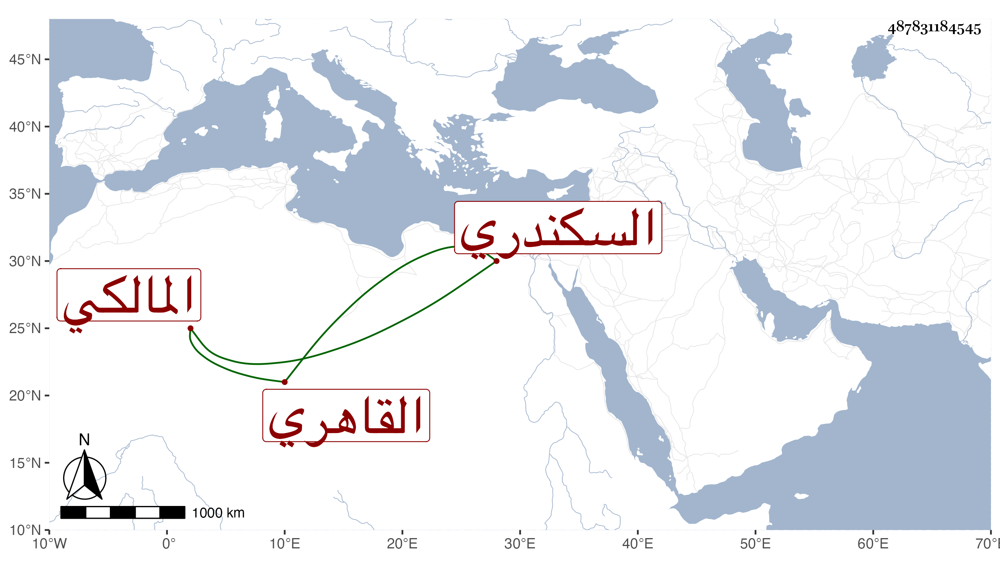

0902Sakhawi.DawLamic.ITO20230111-ara1.EIS1600.487831184545
Biography ID: 487831184545
80
محمد بن محمد بن يحيى بن محمد ناصر الدين بن العز بن المحيوي أبي زكريا السكندري ثم القاهري المالكي والد البدر محمد الماضي ويعرف كسلفه بابن المخلطة بخاء معجمة ولام مشددة مكسورة ثم طاء مهملة وهي أم أحد آبائه . ولد قريبا من سنة تسعين وسبعمائة تقريبا وحفظ القرآن وكتبا وعرض على جماعة وسمع على السويداوي والشرف بن الكويك والجمال عبد الله الحنبلي والكمال بن خير في آخرين حتى سمع على ابن ناظر الصاحبة وابن بردس وابن الطحان . وأجاز له الزين المراغي والجمال بن ظهيرة والزين محمد بن أحمد الطبري ورقية ابنة يحيى المدنية وجماعة واشتغل بالفقه وغيره على أئمة عصره كالجمال الأقفهسي والبساطي ومن هو أقدم منهما وأخذ إقليدس عن الجمال المارداني وتميز وناب في القضاء قديما في سنة سبع عشرة وتصدى لذلك وراج أمره فيه لمعرفته بالأحكام ودربته فيها واستحضاره لفروع مذهبه لكنه كان مقداما بحيث يندب لتعازيز ذوي الوجاهات ويفحش في شأنهم مما كان الأنسب خلافه ، واستقر في تدريس الفقه بالأشرفية برسباي بعد الزين عبادة ثم نزع منه لولديه عملا بشرط الواقف بعناية شيخ المكان وربما أقرأ في الفقه وأفتى وحدث كتبت عنه ، وحج فيما علمته صحبة الركب الرجبي سنة ثلاث وخمسين ولما استقر الأشرف إينال ولاه نظر البيمارستان لاختصاصه به عوضا عن الشرف الأنصاري فلم تطل مدته ومات عن قرب بعد أن ذكر للقضاء الأكبر في ربيع سنة ثمان وخمسين وكان يوما صعبا لشدة ما فيه من السموم والريح الحار ودفن بحوش سعيد السعداء عفا الله عنه .
